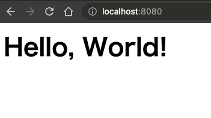

アプリケーションを含んだコンテナを作成する
アプリケーションを含んだコンテナを作成するときも、基本的な流れは同じです。以下では、進め方の例を説明しています。
- 開発チームがアプリケーションのソースコードを開発、修正します
- アプリケーションに必要なライブラリのインストール、ランタイムの設定などをコンテナファイルに記載します
- コンテナビルドを実施し、イメージを作成します
- 開発環境でコンテナの稼働確認を行います
- 組織で用意したコンテナリポジトリーにイメージをPUSHします
- 他のメンバーはイメージをPULLし、自分の環境でコンテナを起動します


アプリケーションを含んだコンテナイメージのビルド
それではアプリを含んだコンテナを作成していきましょう。Node.jsイメージをベースとして使用し、アクセスに対してローカルで用意したindex.htmlを返却するHTTPサーバーのコンテナを起動していきます。大まかな作業内容は以下です。
- ホスト側の index.html ファイルを用意する
- Node.jsを立ち上げるContainerfileを用意する
- コンテナイメージをビルドする
- コンテナを起動、ブラウザからアクセスして稼働確認する
- コンテナに入り、index.htmlを直接編集する
- 変更内容が反映されているか、再度ブラウザから確認する
コンテナイメージに必要なファイルを用意する
まずは作業用ディレクトリを用意し、index.htmlとContainerfileを作成します。 任意のディレクトリ上で、以下のコマンドを実行してください。
任意のテキストエディタを使用して、Containerfileを以下内容に更新します。このContainerfileでは、index.html ファイルをコンテナにコピーし、ポート8080を公開してNode.jsのHTTPサーバーを実行するように定義しています。コンテナが立ち上がるときに
npx http-server -p 8080が実行されます。
| Containerfile | |
|---|---|
以下のコマンドを実行し、ビルドをしてください。ビルドが完了したら、podman image ls コマンドを使用して設定した名前とタグがきちんと設定されているかを確認してみましょう。
コンテナイメージの実行
podman image lsで表示されたイメージリストの中にnode-helloが存在することを確認できたので、実際にコンテナを稼働させていきます。今回は、同じ内容のコンテナを2つ立ち上げます。
次のコマンドを実行しましょう。-d、-pというオプションはこのあと説明します。
podman container run -d -p 8080:8080 --name node-hello node-hello:0.1
podman container run -d -p 8081:8080 --name node-hello2 node-hello:0.1
今皆さんの環境では、node-helloというイメージから作成された2つのコンテナが稼働しています。


ブラウザを開き、http://localhost:8080 および http:localhost:8081 にアクセスして、index.html の内容が表示されることを確認します。同じ内容が表示されていますが、それぞれ別のコンテナ内のhttp-serverからhtmlを取得しています。

podman runで使う知っておくべきオプション
podman runコマンドを使用する際には、いくつかの基本的なオプションを理解しておくと役立ちます。
| コマンド | 概要 |
|---|---|
-p |
ポートフォワーディング（ポートマッピング）を設定します。 -pの後に続く <ホストのポート>:<コンテナのポート> の形式で指定します。例えば、 -p 8080:80 はホストのポート8080をコンテナの80番ポートにリダイレクトします。先程はホストの8080をコンテナの8080にリダイレクトしていました。 |
-d |
コンテナをバックグラウンドモード（デタッチモード）で実行します。これにより、コンテナはバックグラウンドで実行され、シェルプロンプトがすぐに返されます。 |
-i |
(--interactive )このオプションは、コンテナの標準入力（stdin）を開いたままにするために使います。対話的な操作（例えばシェルを実行する際など）を行いたい場合に必要となります。 |
-t |
(--tty): このオプションは、仮想端末（tty）を割り当てるために使います。このオプションがあることで、コンテナが出力する内容がきれいにフォーマットされ、人間が読みやすい形で表示されます。 |
-e |
環境変数を設定します。 -e "ENV_VAR=value" の形式で指定します |
-v |
ホストとコンテナ間でボリュームを共有（マウント）します。データを永続化したり、コンテナ間で共有したりする際に使用します。 -v <ホストのディレクトリ>:<コンテナのディレクトリ> の形式で指定します。 |
--name |
コンテナに名前を付けます。コンテナを指定するときに、コンテナIDではなく自分でつけた名前を使用できるため、コンテナを管理するのが容易になります。 |
--rm |
コンテナが停止したときに自動的にそのコンテナを削除します。指定しない場合は、停止したままコンテナが残り続けてしまう。 |
コンテナ内に入り、直接ファイルを編集する
今、皆様の環境ではnode-hello、node-hello2という2つのコンテナが動いています。
node-hello2 コンテナに入り index.html ファイルを直接変更してみましょう。コンテナに入るために、以下コマンドを実行します。
参考 WORKDIR
カレントディレクトが /app になっていることにお気づきでしょうか？これは、Containerfileに WORKDIR /app と指定しているためです。/appにindex.htmlもいるので、lsコマンドで確認してみてください。
コンテナ内のシェルに入れました！それでは、index.htmlを編集するために、コンテナ内にテキストエディタであるVIMをインストールします。以下コマンドを実行してください。
これで、viコマンドを使いindex.htmlを編集していきます。
以下コマンドを実行すると、コンテナ内にあるindex.htmlをvimで開けます。
以下内容に変更しましょう。vimの操作については、ハンズオンのテーマとは外れてしまうため、説明は割愛します。 vimでファイルを開いたあと、i を押して編集モードにうつり、必要な変更を実施したあと esc を押し編集モードから抜け、 :wq を入力すると 保存して閉じる です。
| index.html | |
|---|---|
変更が保存できたかどうか、念のため確認しておきましょう。
変更が完了したので、再度ブラウザから http://localhost:8081 にアクセスし、変更した内容が反映されていることを確認します。 変わっていない場合はブラウザをリロードしてください。
重要: コンテナの特徴 揮発性と不変性
コンテナには揮発性があり、再起動を行うと変更内容は全て消えてしまいます。この特徴によってコンテナは起動時に常にクリーンな状況であることが保証されます。つまり、同じイメージから作成したコンテナは必ず同一の状態であることが担保されます。これをコンテナの不変性とよびます。どんな環境で動かしたとしても、同じイメージからは全く同じコンテナが作成されます。
「いやいや再起動で消えるなんてデメリットでしかないでしょ。使えないよ！」と思った方、ご安心ください。コンテナへの変更内容を保持する方法が複数存在します。例えば...
- 変更を行った稼働中のコンテナから、新しいイメージを作成する
- データはコンテナの外で管理し、コンテナとマウントする
それでは、node-helloコンテナを利用して実施していきましょう。
1. 変更を行ったコンテナからイメージを作成する
これ方は、変更を行ったコンテナから新たなイメージを作成してしまう方法です。podman container commitを使います。
コンテナを再度起動するときは、新たに作成したイメージを使用することで変更後のコンテナを立ち上げることが出来ます。


それでは、先程変更を行ったnode-hello2コンテナを新しいイメージとして保存する方法を試していきましょう。node-hello2は、イメージ名node-hello:0.1をもとに作成され、以下2つの変更が入っています。
1. テキストエディタとして、vimをインストールした
2. index.htmlの中身を変更した
今回は、変更後のイメージをnode-hello:0.2にします。以下コマンドを実行してください。
コミットIDとしてランダムな文字列が表示されれば成功です。実際にイメージが作成されているのか、podman image lsコマンドを実行して確認してください。
❯ podman image ls
REPOSITORY TAG IMAGE ID CREATED SIZE
localhost/node-hello 0.2 65999f65d1a3 7 seconds ago 946 MB
localhost/node-hello 0.1 cf08a56e2c43 6 days ago 884 MB
localhost/first-hw 1.0 00757cb8db41 7 days ago 521 MB
registry.fedoraproject.org/fedora latest 4ad9a58f652f 10 days ago 280 MB
新しくv0.2イメージの作成が確認できたので、このイメージをもとにnode-hello3という名前のコンテナを作成しましょう。
ブラウザからlocalhost:8083にアクセスすると、先程の変更が反映された画面が表示されることが確認できます。
以上が、直接稼働中のコンテナに変更を加えたあと、そこからイメージを作成する方法でした。
2. データをコンテナの外で管理し、コンテナとマウントする方法
次に、データはコンテナの外に置き、コンテナ内とマウントする方法です。データ本体はコンテナ内にないため、再起動後も変更が削除されることはありません。仮にコンテナを削除してしまっても、再度同じイメージから立ち上げれば、変更済みのデータを参照した状態で稼働させることができます。


上図のマウント方式を、バインドマウントと呼ばれています。ホスト上のファイルを直接コンテナからマウントする方法で、ローカル開発時には非常に便利です。ただ、今回のハンズオン環境ではWindows上で動いている仮想マシンの上でPodmanランタイムが動き、その中でコンテナが動いています。バインドマウントをするためには、ホストと仮想マシン => 仮想マシン仮想とコンテナのマウントとなり、ハンズオンで各設定を実施するのが難しいため割愛します。
次に、こちらの図を御覧ください。これはボリュームマウントと呼ばれ、Podmanがホストとマウントされた仮想ボリュームを管理する方法です。実際の現場では、こちらのマウント方式がよく使われている印象があります。
ボリュームを作成するためのコマンドは非常にシンプル。podman volume create volume名 です。
作成されたvolumeの情報を確認するためには、podman inspectコマンドを使います。
$ podman volume inspect hello-volume
[
{
"Name": "hello-volume",
"Driver": "local",
"Mountpoint": "/var/home/core/.local/share/containers/storage/volumes/hello-volume/_data",
"CreatedAt": "2023-07-02T06:21:37.728193788Z",
"Labels": {},
"Scope": "local",
"Options": {},
"MountCount": 0,
"NeedsCopyUp": true,
"NeedsChown": true
}
]
オプション説明
Mac環境で、上記の流れを説明します。こちらはハンズオンではないので、実行結果だけ読んでいただければと思います。
❯ crc podman-env
export PATH="/Users/junki/.crc/bin/oc:$PATH"
export CONTAINER_SSHKEY="/Users/junki/.crc/machines/crc/id_ecdsa"
export CONTAINER_HOST="ssh://core@127.0.0.1:2222/run/user/1000/podman/podman.sock"
export DOCKER_HOST="unix:///Users/junki/.crc/machines/crc/docker.sock"
# Run this command to configure your shell:
# eval $(crc podman-env)
❯ podman inspect sample
[
{
"Name": "sample",
"Driver": "local",
"Mountpoint": "/var/home/core/.local/share/containers/storage/volumes/sample/_data",
"CreatedAt": "2023-07-01T16:05:32.372338467Z",
"Labels": {},
"Scope": "local",
"Options": {},
"MountCount": 0,
"NeedsCopyUp": true,
"NeedsChown": true
}
]
/node-hello/mount/index.htmlをコンテナが参照するように、node-hello4を立ち上げます。
Info
一般的に、ファイルに変更を加えた場合は再度コンテナイメージをビルドし、タグを更新していく場合が多いです。検証環境/本番環境や地区ごとのシステムなど、環境によって変わる内容はコンテナの外に配置し、変数としてコンテナ内に取り込むようにします。 アプリケーションのコードは環境に依存されない（ことが推奨）ためコンテナに含み、環境によって異なる設定はコンテナの外で管理して起動時に読み込むようにしましょう。タグで管理することで、最新版のコンテナを起動したときにエラーが起きたら、すぐに一つ前のバージョンに切り替え戻すことができます。コンテナ・オーケストレーションツールを使うと、無停止でのバージョンアップ/バージョンダウンが可能になるのですが、それは2章で体験いただきます。。お楽しみに。
コンテナの停止と削除
コンテナを停止、削除しましょう。コンテナは揮発性という特徴があるため、一度削除すると今行った変更は消えてしまいます。これは不便だ、と思われるかもしれませんが、イメージをもとにコンテナを立ち上げるため、再現性(= どんな環境でいつ立ち上げても同じコンテナが作られる)を担保につながっています。コンテナを直接編集しても元となるイメージは変わっていないため、一度削除して再作成した場合変更内容は保存されていないということです。
以上が、開発したアプリケーションをコンテナで稼働させる基本的な流れです。次のチャプターでは、データベースコンテナとアプリケーションコンテナの2つを動かし、コンテナ同士を連携させる方法を学んでいきます。
オプション・ハンズオン Lv2
コンテナのビルドにおいて、複数のステージ（段階）を持つビルドをマルチステージビルドと呼びます。1-1で作成したコンテナファイルは1つの段階だけをもつ基本的なビルドになっていました。ここでは、Javaアプリケーションをビルドするステージ、作成したwarファイルを使用してOpenLiberty上で稼働させるステージの2つに分けたビルドを実施していきます。
マルチステージビルドを使うメリットは何でしょうか？使用されるケースとメリットを以下で紹介します。
-
イメージサイズの削減: アプリケーションのビルド時にだけ必要なコンパイルやパッケージングを中間イメージとし、実行に必要な最終的なイメージと分離することができます。最終的なイメージには稼働に必要なコンポーネントのみを含むことになるため、イメージサイズを小さくすることができます
-
セキュリティの向上: ビルドステージのみで必要な依存関係を含めないことによって、脆弱性の可能性を減らすことができます。
-
ビルドの効率化: ビルドステージではビルドに必要なタスク（コンパイル、パッケージング、テストなど）を実行し、最終的なイメージではそれらのタスクを実行する必要はありません。単一ステージのビルドでは、ビルドスクリプト内ですべてのタスクを実行する必要があります。しかし、マルチステージビルドでは、並列で実行することができます。
マルチステージビルドを行うContainerfileを利用して、以下の流れを実行していきます。
1. Javaの標準ライブラリを使用したシンプルなHTTPサーバーのコードを準備する
2. Containerfileを作成する
- [Buildステージ]Maven等のコンパイルツールが含まれているベースイメージを使用して、Javaアプリケーションを作成
- [Productステージ]作成したアプリケーションを受け取り、OpenLibertyベースイメージ上で稼働させる
3. myappという名前のイメージを作成する
4. 作成したmyappをもとにコンテナを実行する
5. ブラウザからアクセスして稼働確認する
マルチステージビルドを行うコンテナファイルは以下のようになります。
# ビルドステージ
FROM maven:3.8.3-openjdk-11 AS build
WORKDIR /app
# ビルドに必要な依存関係をコピー
COPY pom.xml .
COPY src ./src
# アプリケーションのビルド
RUN mvn clean package
# プロダクションステージ
FROM adoptopenjdk:11-jre-hotspot AS production
WORKDIR /app
# ビルドステージからビルド成果物をコピー
COPY --from=build /app/target/myapp-1.0.0.jar .
# コンテナの実行時にアプリケーションを起動
ENTRYPOINT ["java", "-jar", "myapp-1.0.0.jar"]
CMD ["-start"]
ToDo
上記のサンプルを利用して、Javaアプリケーション・コンテナを稼働させてみましょう。 podman run を行うときのオプションは-p 8080:8080を使用してください。